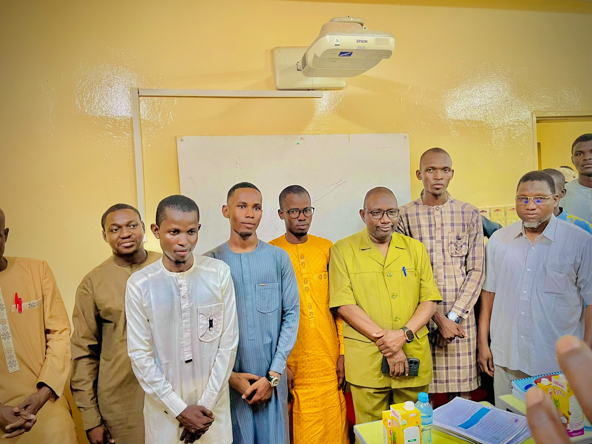
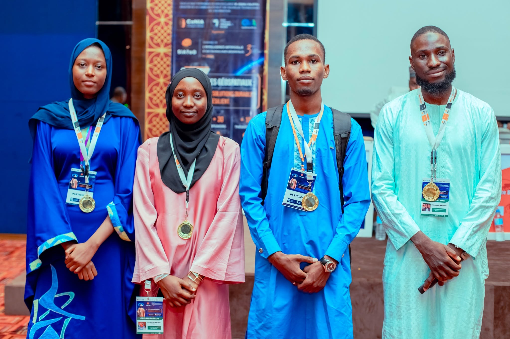

Événements & Participations

AI Summit Africa 2026
Conférence internationale réunissant chercheurs et ingénieurs IA d'Afrique de l'Ouest, autour des enjeux de souveraineté numérique et d'infrastructures LLM.
Une expérience marquante, riche en échanges avec des experts du continent.

Hackathon National IA — Niamey
48h de compétition intensive pour concevoir une solution IA appliquée à l'agriculture de précision au Niger.
Une équipe soudée, un prototype livré dans les temps et beaucoup d'apprentissage.

Meetup MLOps & Cloud AI
Session communautaire sur le déploiement de pipelines MLOps résilients et le monitoring de modèles en production.
Un moment d'échange précieux avec la communauté tech locale.